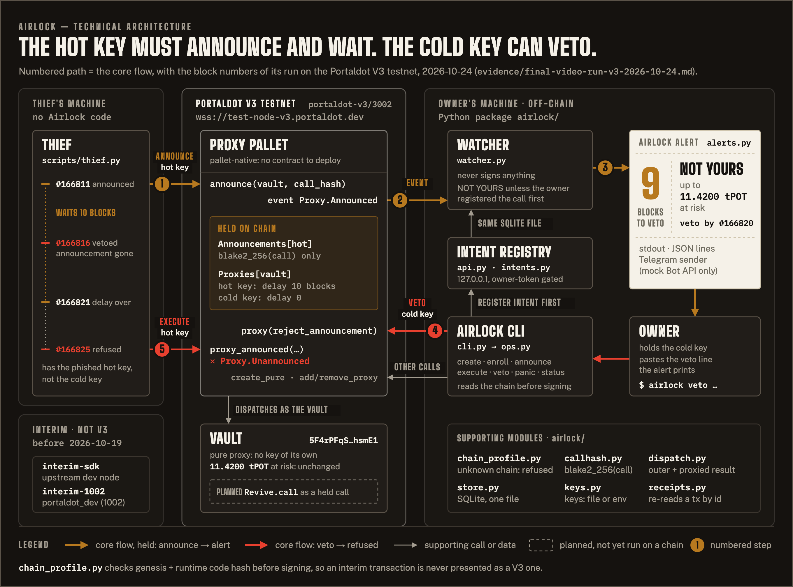

Portaldot Hacker House 2026 · Ecosystem DApps
A Portaldot vault whose hot key can only announce a spend, and whose cold key can veto it.
[v3] ok veto by cold #166816 id 166816-1 VETOED 0x1d19e158…eb40b59
11.4200tPOT
No hold · one key
POT on a single hot key leaves in one extrinsic once its seed leaks. A multisig stops that, but asks a second signer for every payment.
Hot key, no delay
100UNIT
moved to the thief in one extrinsic.
control run (bench --ablate) · interim chain, not V3
Two-key multisig
2signers
on every payment, for one person.
README · Problem statement
The mechanism
It cannot spend directly. It can only publish a call hash.
Proxy.announceThe watcher alerts: YOURS, or NOT YOURS with the amount and a veto line.
event Proxy.AnnouncedThe thief's execute then fails Proxy.Unannounced.
Proxy.reject_announcementYour own spend: register the intent, announce, wait, execute. No co-signer.
Portaldot V3 testnet · portaldot-v3/3002 · 2026-10-24 06:24 WIB
11.4200tPOT
NOT YOURS — VETO Up to 11.4200 tPOT at risk Veto must land by #166820: 9 blocks (≈ 54 s) airlock veto --vault 5F4rPFqS… --hash 0x1d19e158…
4/4 re-fetched by id · vault total unchanged, #166806 to #166835
How it is wired

Why it's new
Delayed proxies with announce and reject ship in the Proxy pallet. In our search (not a market survey) we found no product built on that path.
Ecosystem fit
Proxy.create_purethe keyless vaultProxy.add_proxyhot key with delay, cold key with 0Proxy.announcethe hot key publishes a call hashProxy.proxy_announcedruns after the delay, if not vetoedProxy.reject_announcementthe vetoProxy.remove_proxypanic: retire the hot keySecurity is Portaldot's consensus: a compromised server can mislabel or drop an alert, but cannot move funds or shorten the delay.
Running on Portaldot V3 (portaldot-v3/3002) since 2026-10-19. No contract deployed.
Plan, not built: the hold-ticket flow inside Portaldot Wallet; Revive.call as a held call.
Intended users · open source today: the CLI and the watcher, MIT
A daily hot key for spending; the vault behind it pays out only after a veto window.
Vested payouts land in a vault, so a leaked laptop key cannot sweep them.
Validator stash funds and small team wallets, one operator key each.
First usersgrantees: new grants vested straight into the grantee's vault.
Paida hosted watcher with phone alerts; the CLI and watcher stay free.
Walletthe hold-ticket flow is small enough for Portaldot Wallet to adopt.
Status · 2026-10-25
The ask: open any id and check it
| Page | airlock.edycu.dev |
| Source | github.com/edycutjong/portaldot-hackathon-2026-airlock-edycu |
| Proof log | docs/PROOF.md · every row: id, block, tx |
| Film | youtu.be/Es1387HDSTw |
| The veto | 166816-1 on node-console |
AI assistance. Drafted with Claude (Claude Code) and reviewed by the author: most of the code, the tests, the README and this deck. The author's own: the choice of the Proxy-pallet mechanism, the vault layout and the on-chain design decisions (edycu, solo).
Scan: airlock.edycu.dev